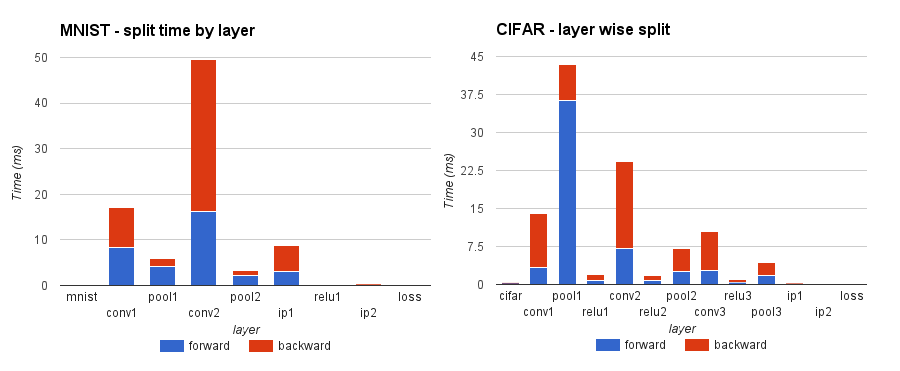
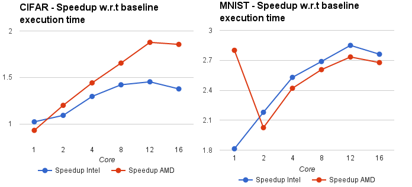
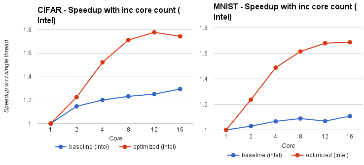
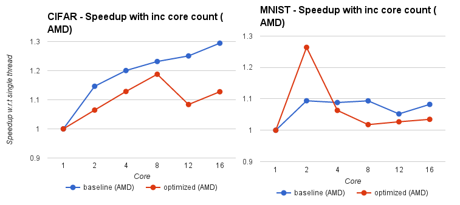
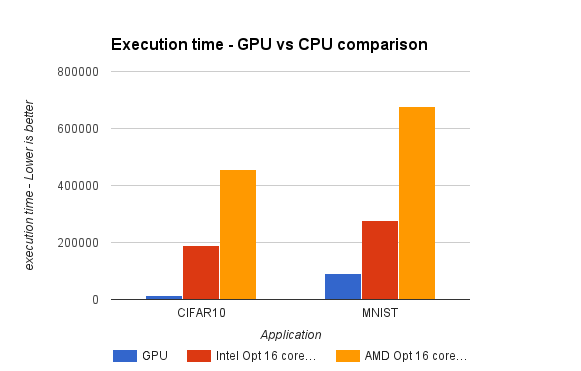

← Back to Projects
Caffe is a deep learning framework made with expression, speed, and modularity in mind. It is developed by the Berkeley Vision and Learning Center (BVLC) and by community contributors.
There has been efforts to use GPU to speedup computation in the Caffe framework due to the Neural network operations being repetitive and compute intensive, cuDNN. There is scope for optimization to tune performance of Caffe on multicore CPU by using parallelism, smart data locality and loop transforms.
This is an first step to show that there is still opportunity for better using the resources on CPUs to make Caffe run faster on modern multicore CPUs. Since Intel Xeon processors are binary compatible with XeonPhi, these optimizations can also help accelerate the program when run on a XeonPhi Knights Corner and upcoming Knights Landing processors.
We focus on 2 applications on Caffe - MNIST and CIFAR10. MNIST was run for 10,000 iterations while CIFAR was run for 5,000 iterations using a batch size of 64. We did not see significant improvement in performance by increasing batch size on our machines.
We use Intel MKL for accelerating math routines within Caffe as we observed OpenBLAS and ATLAS donot perform as well as MKL. Using the best performing BLAS library allows us to show the tuning that can be done over and above the BLAS calls.
Our machine configuration was as below:
Software
• CentOS 7.1
• gcc 4.8.3
• Intel MKL 15.02
Intel Processor
• 2 Sockets, 12 core/socket, 2-way Hyperthreaded
• 48 core Intel Xeon E5-2690 v3 @ 2.60GHz (Haswell)
• 95 GB memory
AMD Processor
• 4 socket, 8 core/socket, 2-way Hyperthreaded
• 64 core AMD Opteron 6386 SE
• 95 GB memory
NVIDIA GPU
• NVIDIA GK110BGL Tesla K40c (Kepler)
• 12GB DDR5
For our purposes we only study scaling of performance upto 16 cores on each multi-core machine. We are currently in the process of collecting results for higher core counts.
After applying our loop parallelization transforms within each layer and to an extent some data locality transforms, we analysed the distribution of time across the layers of MNIST and CIFAR applications. We find that the Convolution layer (conv2) in both the applications took the majority of time. In CIFAR however the pool1 layer took the maximum time. These are still potential regions for optimizations.

The figure below shows the execution time speedup obtained over baseline code on both Intel and AMD processors. Our optimized version of the code gets speedup of 2.7X on Intel and 2.6X on AMD for MNIST and 1.3X on AMD and 1.8X on Intel for CIFAR over baseline unoptimized implementation for 16 cores.

Figure below shows the strong scaling characteristic of CIFAR and MNIST over increasing core counts. The graph shows the speedup w.r.t single threaded execution. Blue line indicates unoptimized code and red line indicates our optimized code. The graphs show the behaviour on Intel processors followed by AMD processors.


Finally we compare our best runtime on CPU (16 core) with that on the NVIDIA GPU using cuDNN calls to accelerate functions. Unfortunately there is about a 30X slow down of CPU for CIFAR and 7.5X slowdown of CPU for MNIST for GPU. This shows that the code for neural network scales well with increasing number of cores.

FUTURE WORK: There are still several optimizations possible for neural network and this work merely scratches the surface. We would like to further test this optimized code on a XeonPhi coprocessor given that the code can still scale over increasing core count and also given that the code performs well on a simplistic core like the GPU.
UPDATE: In a recent Intel High Performance Computing conference held in Bangalore on 14th Dec 2015, Pradeep Dubey from Intel revealed that they have been able to obtain a speed up of 13X on XeonPhi Knights Landing processor using Intel DAAL and MKL over a baseline run of the code using BLAS on a CPU. They also see a speedup of about 2X over the best known GPU implementation.
- Compiler Optimizations
- SIMD Vectorization
- AVX / SSE2
- Parallelization / OpenMP
- Tuning algorithm behaviour
- Course Project